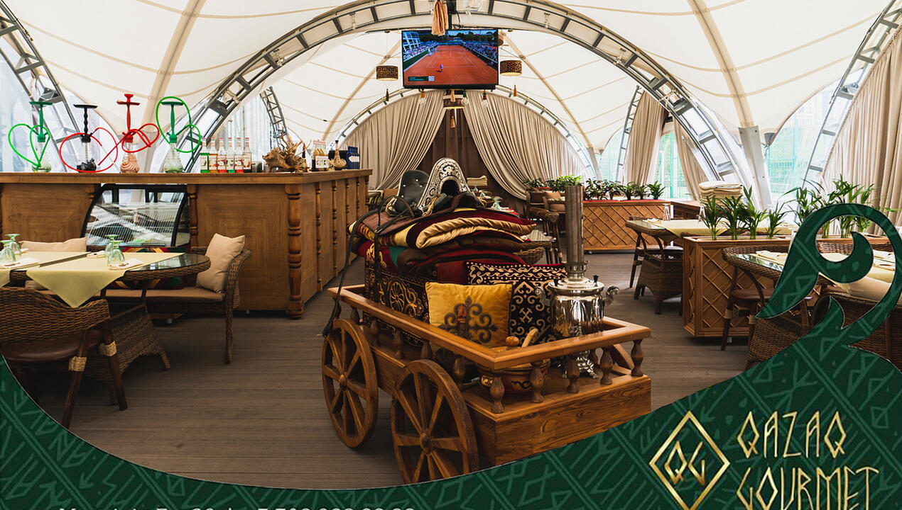
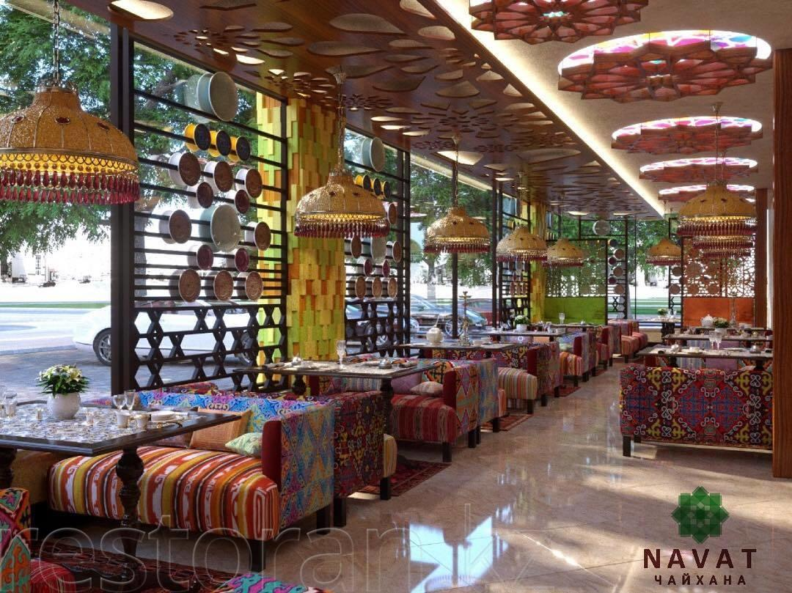
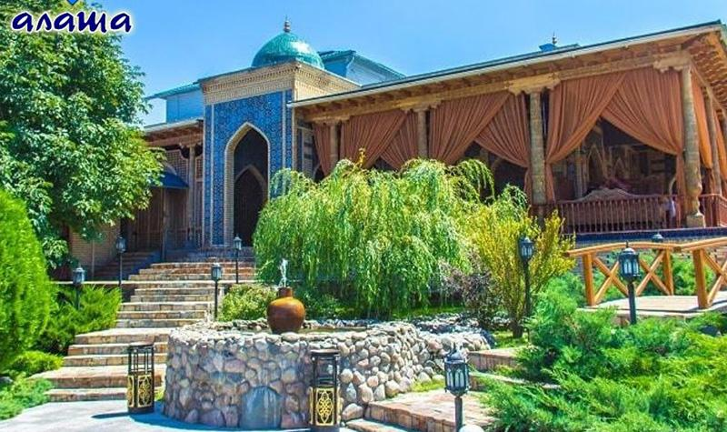
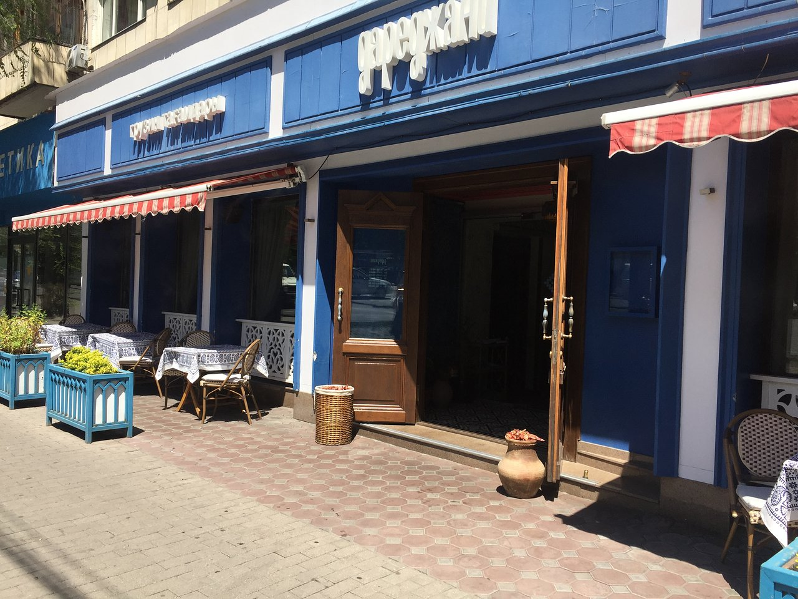

Рейтинг лучших ресторанов Казахстана
Наша основная цель — создать детальный и объективный обзор лучших ресторанов, чтобы помочь каждому посетителю найти идеальное место для гастрономического удовольствия. Мы тщательно анализируем особенности заведений, их кухню, атмосферу, уровень сервиса и мнение гостей, чтобы сформировать рейтинг, достойный доверия. Благодаря нашим обзорам рестораны, которые действительно заслуживают внимания, становятся более популярными и уважаемыми, привлекая новых гостей и подтверждая свой высокий статус в кулинарном мире.
Каждый год в Казахстане проводится мероприятие, на котором определяют лучшие кулинарные заведения страны.
Список лучших ресторанов Казахстана:

Ресторан Qazaq Gourmet (Алматы, Казахстан)
Ресторан Qazaq Gourmet – это уникальное место в Алматы, где традиционная казахская кухня приобретает новые гастрономические оттенки благодаря современным кулинарным техникам. Заведение сочетает в себе богатое культурное наследие и изысканный авторский подход к подаче блюд.
Интерьер и атмосфера:
Qazaq Gourmet оформлен в традиционном казахском стиле с элементами современного дизайна. Здесь можно увидеть искусно вышитые ткани, национальные узоры, деревянную резьбу и уютные мягкие кресла. Вечерами в ресторане играет живая музыка, создавая теплую и гостеприимную атмосферу.
Меню и кухня:
Меню ресторана представляет собой оригинальное сочетание классических казахских блюд и авторских интерпретаций. Среди главных кулинарных шедевров:
Бешбармак – традиционное мясное блюдо, приготовленное по старинным рецептам с нежной кониной.
Казы и карта – ароматные конина и говяжьи деликатесы, подаваемые с домашними соусами.
Баурсаки – хрустящие золотистые кусочки теста, идеально сочетающиеся с чаем или национальными супами.
Наурыз-коже – традиционный суп с семью ингредиентами, символизирующий благополучие.
Плов по-казахски – насыщенный ароматами рис с бараниной и сухофруктами, приготовленный на открытом огне.
Ресторан также предлагает широкий выбор напитков, включая национальные чайные композиции и ферментированные молочные напитки, такие как кумыс и шубат.
Средняя стоимость посещения: от 6000 ₸ (примерно 1200 ₽)
Рейтинг: ⭐⭐⭐⭐⭐ (4.8/5)
Обслуживание: Дружелюбный персонал, высокий уровень сервиса, внимательное отношение к гостям, возможность индивидуального подбора блюд.

Ресторан Navat (Алматы, Казахстан)
Navat – это популярная сеть ресторанов, представляющая казахскую и среднеазиатскую кухню. Заведение славится уютной атмосферой, оформлением в восточном стиле и традиционными блюдами, приготовленными по старинным рецептам.
Интерьер и атмосфера:
Navat оформлен в духе восточных караван-сараев: деревянная резьба, мягкие диваны, расписные стены и изысканный декор создают уютную обстановку. В ресторане играет живая музыка, а гостям предлагают продегустировать национальные напитки.
Меню и кухня:
Манты с бараниной – сочные паровые пирожки с ароматными специями.
Лагман – тянутая лапша с мясом и овощами в насыщенном бульоне.
Шашлык – нежное мясо, приготовленное на открытом огне.
Самса – слоеные пирожки с говядиной, курицей или тыквой.
Чайхана плов – традиционный узбекский плов с бараниной.
Средняя стоимость посещения: от 5000 ₸ (примерно 1000 ₽)
Рейтинг: ⭐⭐⭐⭐⭐ (4.7/5)
Обслуживание: Быстрое и вежливое, внимательный персонал, удобные условия для семейных посиделок.

Ресторан Alasha (Алматы, Казахстан)
Alasha – элитный ресторан узбекской кухни с великолепным видом на горы и оригинальной подачей блюд. Здесь можно насладиться национальной атмосферой, выступлениями артистов и блюдами из тандыра.
Интерьер и атмосфера:
Alasha оформлен в стиле восточного дворца с яркими орнаментами, шелковыми шторами и низкими столиками. Вечером проводятся шоу-программы с танцами живота и живой музыкой.
Меню и кухня:
Тандирное мясо – нежнейшее мясо, приготовленное в глиняной печи.
Сумаляк – традиционная узбекская сладость.
Кебабы и люля-кебабы – разнообразие мясных блюд.
Ферганский плов – классический узбекский плов, приготовленный в казане.
Чебуреки с сыром и мясом – хрустящие пирожки с начинкой.
Средняя стоимость посещения: от 6000 ₸ (примерно 1200 ₽)
Рейтинг: ⭐⭐⭐⭐⭐ (4.8/5)
Обслуживание: Профессиональный сервис, быстрая подача блюд, забота о гостях.

Ресторан Daredzhani (Алматы, Казахстан)
Daredzhani – это грузинский ресторан, где можно насладиться настоящей атмосферой Тбилиси и традиционными блюдами кавказской кухни.
Интерьер и атмосфера:
Заведение оформлено в духе старого Тбилиси с элементами грузинской культуры: кувшины, деревянные стеллажи с вином, винтажные лампы. Теплая, душевная атмосфера делает ресторан идеальным местом для семейного отдыха.
Меню и кухня:
Хачапури по-аджарски – запеченное тесто с сыром и яйцом.
Шашлык из баранины – маринованное мясо, приготовленное на мангале.
Чашушули – говядина, тушеная в томатном соусе с пряностями.
Сациви – курица в ореховом соусе.
Грузинские вина – широкий ассортимент красных и белых вин.
Средняя стоимость посещения: от 5000 ₸ (примерно 1000 ₽)
Рейтинг: ⭐⭐⭐⭐⭐ (4.7/5)
Обслуживание: Гостеприимный персонал, внимательное отношение к клиентам, быстрый сервис.